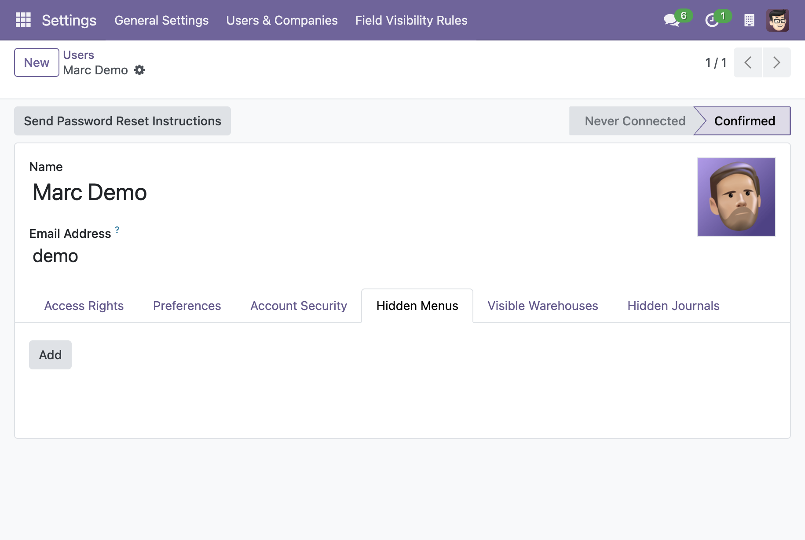
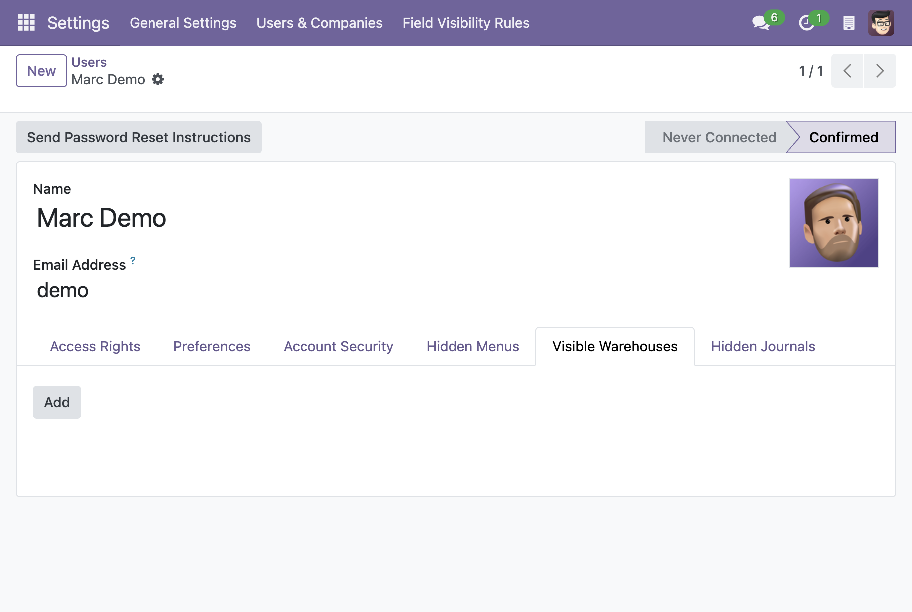
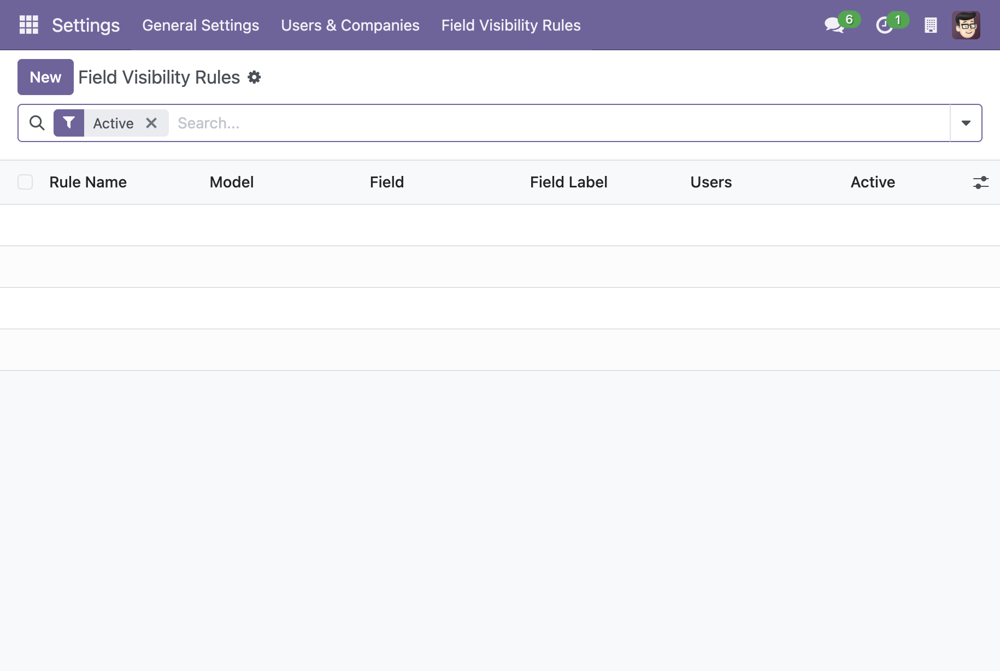
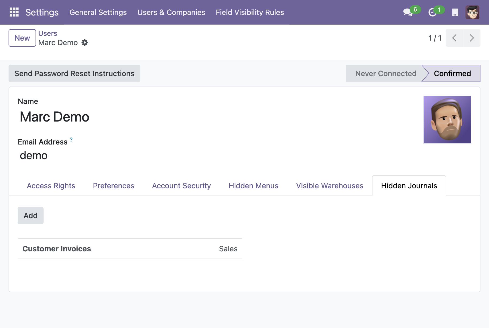
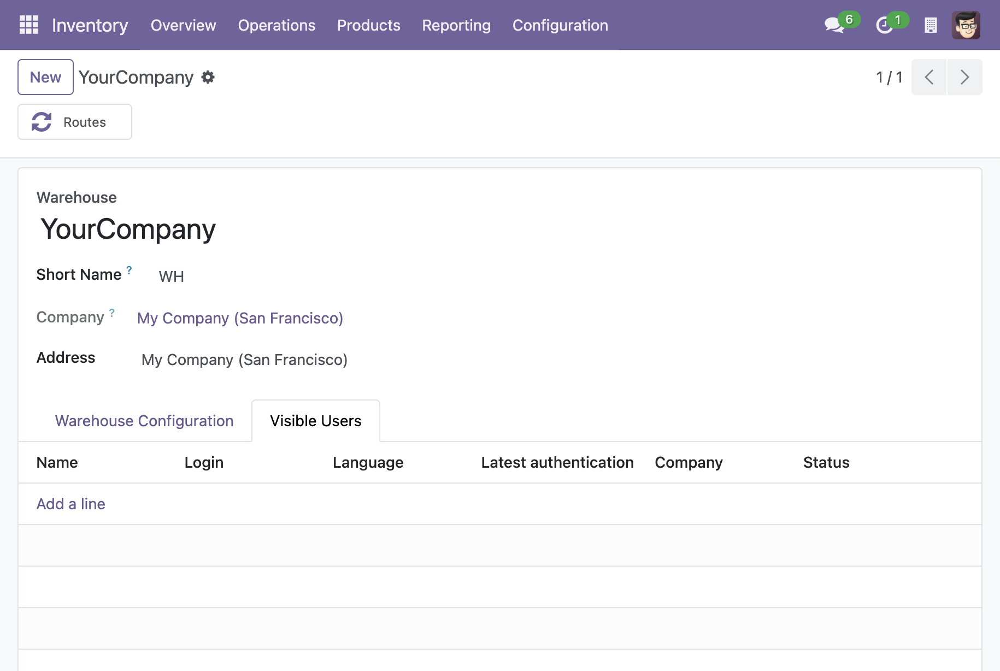
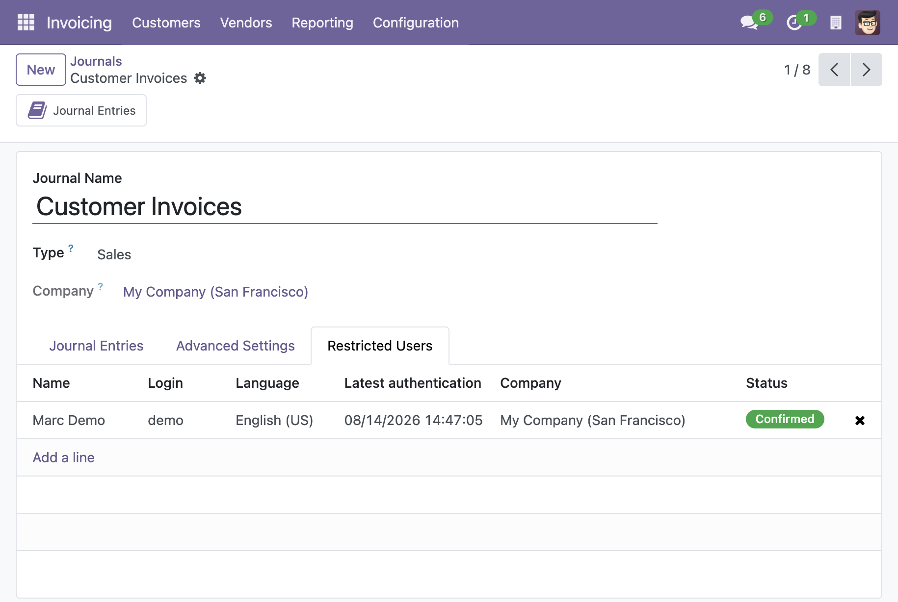

Control what each user can see across the whole system: hide menu items, hide any field of any model, restrict warehouse operations per user, and hide accounting journals per user. System administrators always see everything.

Configure from the user form ("Hidden Menus" page) or from the menu itself. Both sides stay in sync natively.

Users in the "Warehouse Visibility" group only see operations (receipts, deliveries, internal transfers) of the warehouses listed on their user record. An empty list means no operations are visible.

Create rules under Settings > Field Visibility Rules. A rule hides one field of one model for the selected users. Hiding sets invisible="1" on the view node, so the value stays loaded and the view is never broken.

Administrators pick the hidden journals on the user's "Hidden Journals" page. A restricted user cannot read the journal, its entries (account.move) or their lines (account.move.line) — through menus, reports, exports or API.


Warehouses: assign users from the warehouse form ("Visible Users" tab). Journals: pick restricted users from the journal's "Restricted Users" tab. Both sides stay in sync natively.